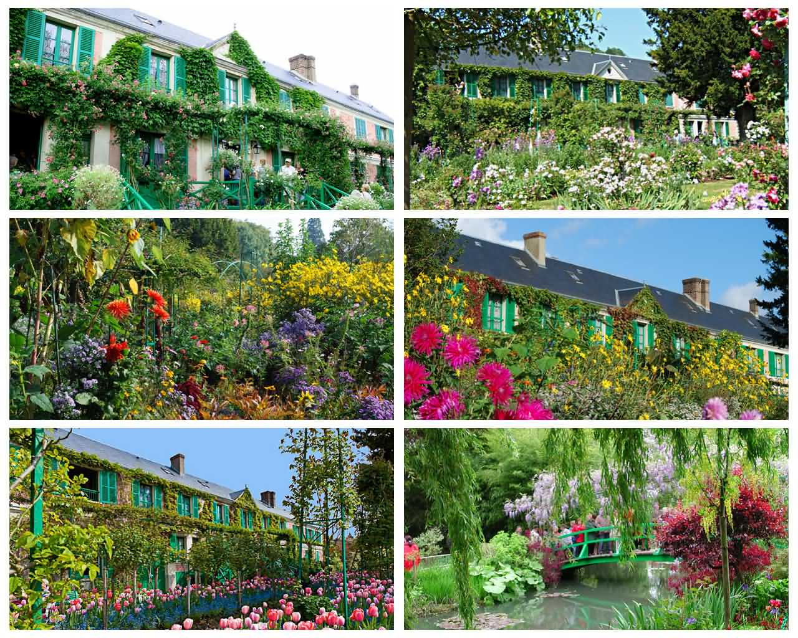

挪威的雷讷(Reine)

究竟一个地方能有多美，美得不真切，就好像只存在于画上，雷讷(Reine)，这个位于挪威北部罗弗敦群岛上的小渔村，就是这样一个地方。1970年代后期，挪威最大的周刊Allers评选雷讷为挪威最美丽的村庄。 登上Reinebringen山俯瞰雷讷，一副绝世美景展现在眼前：陡峭险峻的山峰环绕着碧蓝的海水，雷讷静静卧于峡湾之中，一边起伏险峻的山峰是它天然的屏障，正是有它的保护使雷讷成为峡湾中绝世清幽的遗世小镇。 另一边是无边际的大海，雷讷就像是从海底升腾而起慢慢飘到陆地边的奇迹城。山坳里的一泓幽兰就像传说中的荷鲁斯之眼，似乎有一股致命的魔力想要吞噬你……
瑞士的施皮兹(Spiez)
图恩湖(Lake Thun)上的施皮兹，绝对是个迷人的旅游胜地。它背靠群山，面对葡萄园，而最宏伟对是一座高高耸立的辉煌城堡。湖上的尼德洪 (Niederhorn)山脉，一直延伸到伯尔尼阿尔卑斯山脉(Bernese Alps)， 形成壮丽的全景画面。温和的气候和明媚的阳光，大大提高此地的生活水平，使之成为出发探索伯尔尼高地(Bernese Oberland)或瓦莱州(Valais)诸多著名旅游名胜的理想起点。
法国的吉维尼(Giverny) - - 鲜花无处不在

这是法国西海岸诺曼底典型农村，印象派大师莫奈选择在此定居。小村位在塞纳河谷的一个小山坡上，周围是葱郁的树林和碧绿的草场，村前是一片略有倾斜的开阔地，一直延伸到塞纳河边。 据说当年莫奈曾在巴黎近郊塞纳河沿岸的多个村子租房，对周围环境均不甚满意。1883年4月的一天，他乘坐从维尔侬到加斯尼的小火车，在车门处发现了烂漫花丛中的吉维尼，就像寻觅的少年终于找到了心仪的情人， 莫奈一见钟情，当机立断，立即举家迁居此地，而且一住就是43年，直至去世。
新西兰的特卡波(Tekapo) - - 世界最美丽的星空
特卡波位于新西兰南岛南阿尔卑斯山东麓，是著名的旅游胜地，小镇的特卡波湖是大洋洲最大的淡水湖，出产优质的鲑鱼，是垂钓和水上运动的好地方。每年从秋天开始，白雪皑皑的山麓就吸引世界上众多滑雪爱好者前来。 特卡波的夜空静谧而璀璨，抬头仰望夜空，繁星点点，银河和大团星座清晰可见，游人在这里可以看到只有在南半球才能观测到的南十字星，幸运的话还能看到流星划过夜空，令人仿佛置身于童话世界。在城市灯光和大气污染日益严重的今天， 这样美丽而浪漫的夜空寥寥可数，在世界其他地方几乎是见不到的。